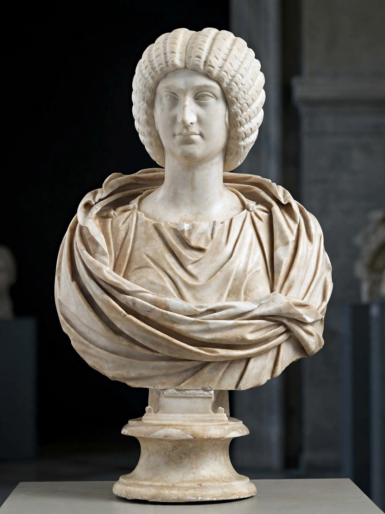

| Julia Domna (c. 160–217) | |
|---|---|
| Born | Emesa, Syria |
| Spouse | Septimius Severus |
| Children | Caracalla, Geta |

Julia Domna (c. 160 – 217 AD) was a Syrian-born Roman empress, wife of Emperor Septimius Severus and mother of emperors Caracalla and Geta. She was one of the most politically influential women of the Roman Empire.
Born in Emesa (modern Homs) to a priestly family of the sun god Elagabal, Julia married Severus in 187. Tradition says Severus chose her because her horoscope predicted she would marry a king. She accompanied him on campaigns, receiving the title Mater Castrorum ('Mother of the Camp'), and held unprecedented public honours.
Julia patronised philosophers and writers — Philostratus wrote the Life of Apollonius of Tyana at her request — and exercised real administrative power, handling petitions and correspondence while Caracalla campaigned. After Caracalla's assassination in 217 and Macrinus's accession, she died at Antioch, by some accounts starving herself. She was deified, and her sister Julia Maesa later restored the Severan dynasty.